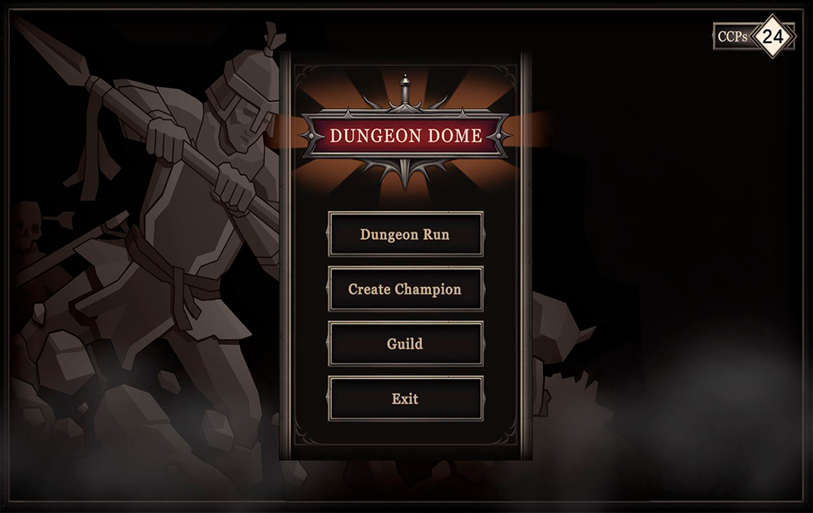

Education
Design & Development of Videogames Degree

Bachelors Degree Graduate in Design and Development of Videogames. During this 4-year career, I learned in the fields of programming and design as well as 3d, as well as the use of the most used engines such as Unity or Unreal5, as well as learning to program in C, C++ and C#.
Carlos Coronado Unreal Engine 5 Course
An online course that I completed after finishing my undergraduate studies. A course where I learned more in depth how Unreal works, what features make it such a good graphics engine and how to program in its blueprints system.
Experience
Dungeon Dome
An independent project, currently on-going, with a small team of students/ recently graduated. In DungeonDome, players create, build and train procedurally generated characters from a vast database of options. These characters join companies that explore dungeons crafted by illusionist magicians for the delight of the public. The survivors of these perilous dungeons earn the right to compete against other teams in the DungeonDome, the ultimate dungeon challenge. Each of the events that occur in the game are recorded to feed the personal diary of each character, in a complete and novel procedural narrative system.
3D Modeling, Texturing and Animation

Independent projects I did in various ocassions for assembly videos of various Roca products or renderings to show the new generation of Siemens pharmaceutical machinery.